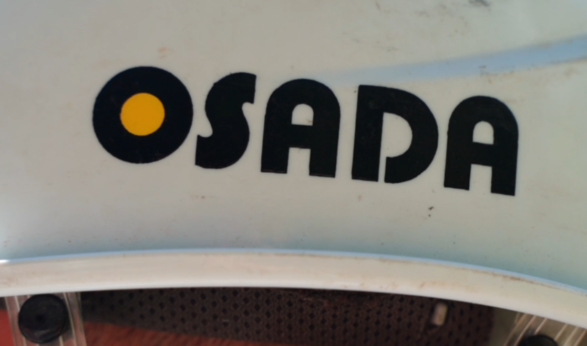
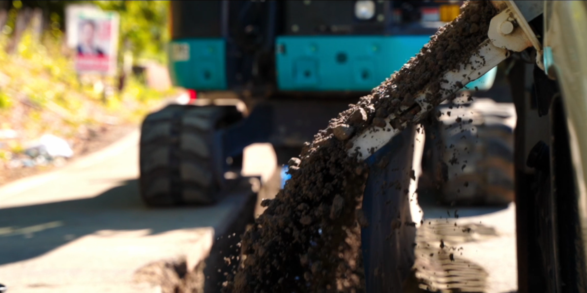
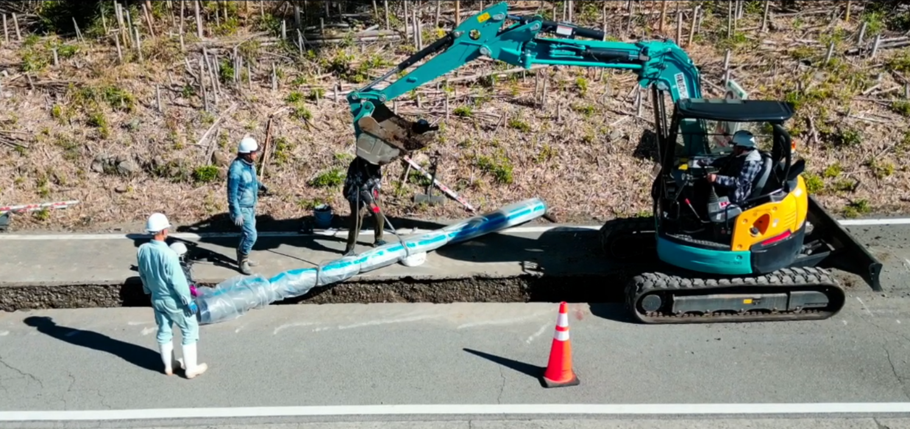

ニュースを読み込んでいます...
長田建設株式会社は1960年に創業し、1985年に法人化しました。 公共工事をメインにあらゆる工事を手掛け、「自然災害に強い地域づくり」をスローガンに 道路工事、河川工事、治山工事など人々が安心して暮らせる街づくりを通じて社会に貢献しています。
詳細を見る
私たちの事業領域

当社では公共土木工事を主に行っています。受注の9割以上が公共工事で、 道路、橋、トンネル、上下水道、河川など様々な分野で地域に貢献しています。 創業から今まで培ってきた信頼と技術力を後世に残せるよう、これからも地域社会に貢献していきます。
詳細を見る1960年の創業以来、60年以上にわたり地域に根ざした土木工事を手掛けてきました。 公共工事を中心とした豊富な実績と確かな技術力で、安全で品質の高い工事を提供します。 地域の皆様との信頼関係を大切にし、安心して暮らせる街づくりに貢献しています。
詳細を見る
大切にしていること
TRUST BUILDING
公共工事を通じて培った確かな技術と誠実な施工で、地域社会の安心と発展に貢献します。これからも安全性と品質を追求し、信頼されるまちづくりを実現してまいります。
SUSTAINABILITY
環境に配慮した施工を通じて、持続可能な社会の実現に貢献します。ICT施工など新たな技術を積極的に取り入れ、効率的で環境負荷の少ないまちづくりを目指します。さらに再生資源の活用を推進し、地球環境の保護に努めています。
QUALITY EXCELLENCE
工事着工から竣工まで、すべての工程において最高品質を追求します。経験豊富な現場監督が連携し、発注者の期待を上回る品質を目指します。
アクセス
〒400-1507
山梨県甲府市下向山町1667番地
055-266-3954
055-266-2954
osadakk@athena.ocn.ne.jp